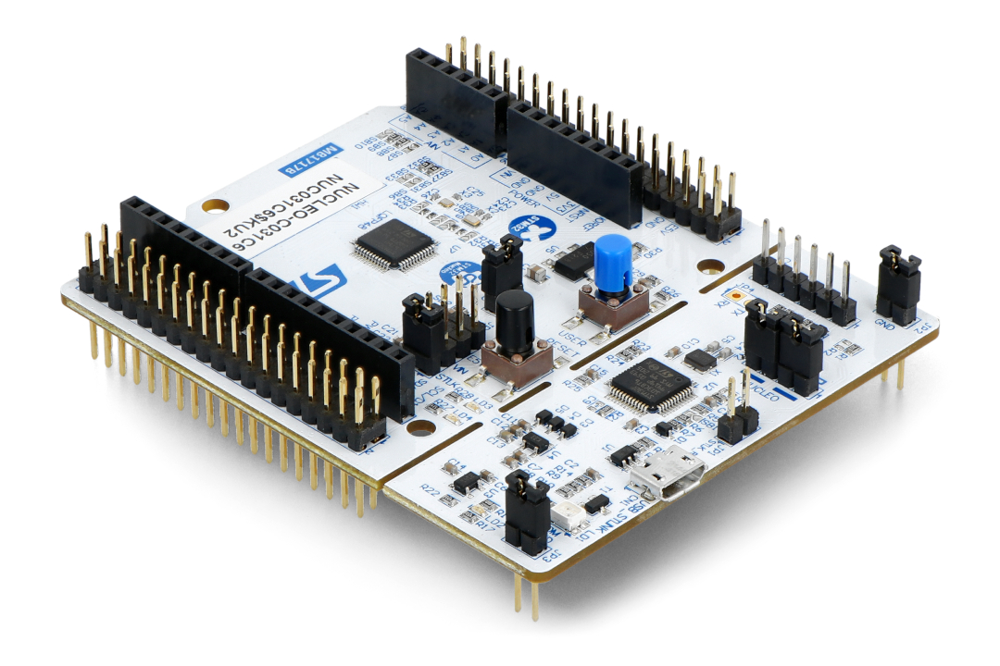
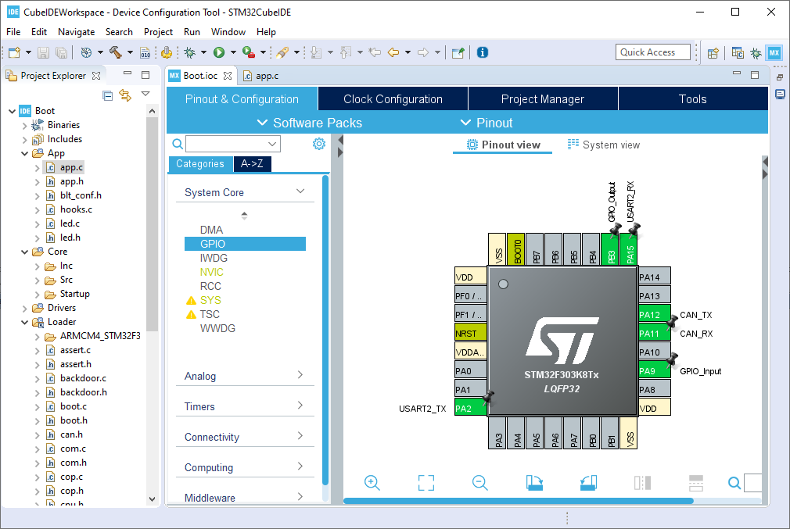
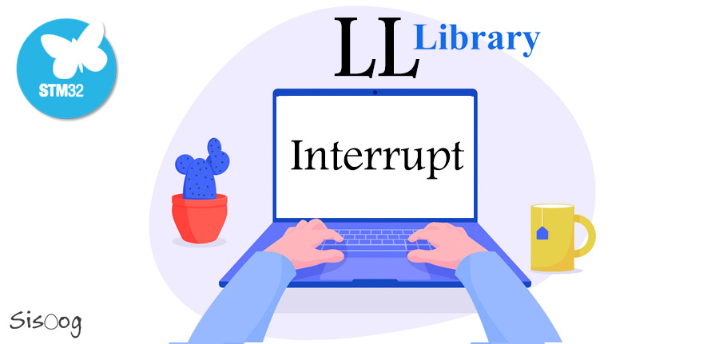

Contexte entreprise
Contexte entreprise stage Schneider Electric

Schneider Electric est une entreprise mondiale spécialisée dans la distribution électrique et les automatismes, avec un chiffre d'affaires de 34 milliards d'euros en 2022. Elle compte plus de 135 000 employés répartis dans plus de 100 pays. Schneider Electric produit certains de ses propres produits dans ses laboratoires en partenariat avec Enedis, mais sous-traite également la production et l'importation de composants et de matières premières pour répondre à la demande des clients. L'entreprise utilise divers logiciels et outils pour ses activités. Les collaborateurs utilisent des navigateurs web tels que Google Chrome ou Firefox, des adresses e-mail personnelles sur Outlook, et une plateforme de discussion interne sur Teams. Ils ont également accès à des applications telles que Zscaler pour se connecter aux réseaux Wi-Fi de l'entreprise, GlobalProtect pour gérer les autorisations d'accès, Jabra Direct pour la configuration des casques, Trellix pour la sécurité des données, Sentinel One Agent pour la protection contre les logiciels malveillants, et Service Desk Support pour obtenir une assistance technique à distance. En ce qui concerne la gestion de projet, l'objectif du projet actuel est de migrer du code assembleur vers une version plus récente en langage C. Le processus implique la documentation sur le produit, la compréhension du code assembleur existant, la mise en place du code sur une maquette de test, puis sur un véritable produit. Les tests sont effectués en vérifiant les seuils et en s'assurant que les fonctionnalités du produit répondent aux exigences. L'équipe de projet est composée d'un ingénieur d'étude conception et d'un chef de projet. Le premier se concentre sur les tests et l'intégration du produit, tandis que le second travaille sur la compréhension du code assembleur et la programmation des spécificités requises pour le nouveau produit. L'environnement de développement utilisé est STM32CubeIde, avec des cartes de développement de type STM32 Nucleo. Le langage de programmation principal est le C, mais des connaissances en assembleur sont également nécessaires. Les API utilisées comprennent la bibliothèque HAL pour les tâches générales et l'API LL pour des besoins plus spécifiques. Les tests sont effectués en visualisant les résultats sur des LED ou en utilisant le mode débogage pour vérifier le comportement du code et les valeurs des variables. Les documentations techniques des produits et les documentations de référence utilisateur sont utilisées comme références pour le projet.

Sur l'environnement de développement intégré STM32CubeIDE, il existe différents modes pour gérer les interactions avec les périphériques sur les microcontrôleurs STM32, tels que les interruptions et le polling (ou lecture continue). Ces modes offrent différentes approches pour la gestion des événements et des données, offrant ainsi une flexibilité dans le développement des applications. Les interruptions sont un mécanisme qui permet au microcontrôleur de détecter et de répondre rapidement à des événements spécifiques. Lorsqu'un événement se produit, une interruption est générée, ce qui entraîne une interruption du flux d'exécution normal du programme. Le contrôleur de l'interruption transfère ensuite l'exécution vers une routine d'interruption spécifique, appelée gestionnaire d'interruption, qui traite l'événement en question. Les interruptions sont utiles pour des tâches nécessitant une réponse rapide et précise, comme la gestion des temporisateurs, des communications série ou des entrées/sorties (E/S) asynchrones. D'un autre côté, le polling (ou lecture continue) est une méthode où le microcontrôleur vérifie régulièrement l'état d'un périphérique ou d'une ressource pour détecter un changement ou une condition spécifique. Dans ce mode, le microcontrôleur utilise généralement des boucles itératives pour vérifier périodiquement l'état des broches d'entrée/sortie ou des registres de périphériques. Le polling est souvent utilisé dans des tâches qui ne nécessitent pas de réponse immédiate, comme la lecture de capteurs, la communication synchrone ou le contrôle d'affichage. Lors du développement d'applications sur STM32CubeIDE, il est important de choisir le mode de gestion des périphériques approprié à chaque situation. Pour cela, il est essentiel de comprendre les caractéristiques des modes d'interruption et de polling, ainsi que les besoins spécifiques de l'application. En ce qui concerne les API HAL (Hardware Abstraction Layer) et LL (Low-Level), elles offrent des abstractions de programmation différentes pour interagir avec les périphériques sur les microcontrôleurs STM32. L'API HAL est une couche d'abstraction matérielle de plus haut niveau qui fournit des fonctions prédéfinies pour gérer les périphériques. Elle simplifie la programmation en fournissant des interfaces conviviales et en masquant les détails de bas niveau. L'API HAL est souvent recommandée pour les développeurs débutants ou ceux qui ont besoin de développer rapidement des applications fonctionnelles sans se soucier des détails de bas niveau. D'autre part, l'API LL est une couche d'abstraction matérielle de plus bas niveau qui offre un accès direct aux registres du microcontrôleur. Elle fournit des fonctions pour configurer et contrôler les périphériques au niveau des registres. L'API LL est généralement utilisée par les développeurs expérimentés qui nécessitent un contrôle précis et une optimisation des performances. Le choix entre les API HAL et LL dépend des besoins spécifiques de l'application et du niveau de contrôle souhaité. L'API HAL offre une abstraction plus élevée et une facilité de développement, tandis que l'API LL permet un contrôle plus fin et une optimisation des performances. En résumé, les interruptions et le polling sont deux modes de gestion des périphériques sur STM32CubeIDE. Les interruptions sont utilisées pour des tâches nécessitant une réponse rapide, tandis que le polling est utilisé lorsque la réactivité immédiate n'est pas critique. Le choix entre les API HAL et LL dépend des besoins de l'application, l'API HAL offrant une abstraction plus élevée et l'API LL offrant un contrôle plus fin.

Merci à Schneider Electric de m'offrir cette oportunité d'améliorer mes compétences en C ce qui me permettra d'avoir des bases encore plus solide pour le C,C++,C# pour mon projet de développement d'application futur. Ce stage est pour l'instant l'un des meilleurs que j'ai effectué. J'apprend beaucoup de choses et je suis pas mal en autonomie donc je peux apprendre et regarder ce que j'ai envie. Cela me permet d'utiliser plusieurs API ou différents moyen que j'ai envie d'éxperimenté. Sur certaines tâches mes supérieurs me laisse effectué les tâches demandés sous plusieurs forme pour m'éxperimenté le plus possible, comme les modes interruptions ou pulling. Merci d'avoir lu ce contexte d'entreprise.